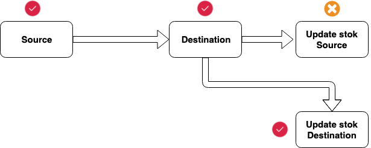

Transaksi adalah satu fitur DBMS relasional cukup penting bahkan menjadi keunggulan dari DBMS relasional secara umum Buatlah artikel dengan memberikan satu atau lebih contoh kasus suatu operasi yang harus dieksekusi dengan transaksi karena membutuhkan requirement ACID di dalamnya. Contoh kasus dapat diambil dari operasional suatu entitas bisnis/organisasi misalnya Perpustakaan
Dalam artikel, jabarkan dengan jelas step-step dari transaksi tersebut dan alasan mengapa operasi tersebut harus dibuat dalam transaksi berdasarkan requirement ACID. Sertakan ilustrasi jika diperlukan Tugas ini merupakan tugas perorangan. Tulisan kalian buat dalam sebuah halaman web personal yang dapat diakses publik. Alamat web dari tugas kalian silahkan copy dan paste sebagai reply dari thread ini.
Database transaction adalah salah satu subset yang disediakan SQL. Gunanya untuk mengatur alur data transaksi dalam suatu database. Transaction ini biasanya digunakan didalam trigger. Namun, jangan samakan transaction ini dengan trigger. Trigger dijalankan untuk menanggapi perubahan tertentu pada tabel tertentu.
Mari saya contohkan ilustrasinya.
Toko-Queen mempunyai barang (10) dan ingin mengirim barang ke salah satu cabang Toko-War (5) dan War ini tidak memiliki barang tersebut.
Lalu, kita bagi menjadi beberapa proses alur data:
1. Queen mengirim barang (source) ke cabang (destination) War
2. Data barang diterima oleh War
3. Jumlah yang berada di Queen berkurang menjadi 5
4. Jumlah barang bertambah di War menjadi 5

Flow di atas adalah kasus yang dimana semua proses alur datanya berhasil selamat sampai tujuan akhir. Lalu, bagaimana jika di tengah-tengah proses terdapat kegagalan? Kegagalan ini bisa disebabkan banyak hal (internet mati, mati lampu, salah tipe data, dan lain-lain).
Flow di atas update stock source terdapat kegagalan, sedangkan update stock destination berhasil. Ini akan berakibat fatal sebab stok dari Queen tidak berkurang, sedangkan Stock War bertambah dengan sendirinya
Karena kasus sejenis itu, para ilmuwan dunia “Juru Ketik” membuat yang disebut proses Transaction. Dengan ini, jika ada kegagalan dalam 1 node (proses), seluruh transaksi (proses input) akan dibatalkan. Sementara itu, jika berhasil akan di-commit.
Transaction terdiri atas hal-hal berikut:
1. BEGIN
digunakan saat data akan diproses.
2.COMMIT
digunakan jika semua kasus pada alur proses berhasil. Bila demikian, fungsi commit harus diterapkan agar tersimpan di database.
3. ROLLBACK
digunakan jika terdapat kasus ada kegagalan (kesalahan/error) di salah satu proses itu. Maka, semua proses input akan dibatalkan (rollback) dan tidak akan disimpan ke dalam database.